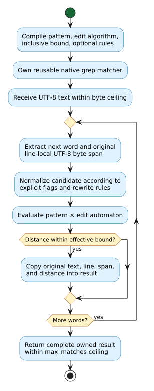

Phonetic matching and analysis
Liblevenshtein exposes several different phonetic tools. A pattern is a compiled language of acceptable text; a rewrite rule changes a candidate's spelling or transcription; articulatory distance compares International Phonetic Alphabet (IPA) sounds by their features; and phonetic grep scans text for words accepted by a pattern within an edit bound. These tools answer different questions and can be combined without preprocessing a dictionary.
All APIs on this page require a native library built with BUILD_FEATURE_PHONETIC; check build_features() & BUILD_FEATURE_PHONETIC != 0 when loading a library of unknown provenance. Input strings must be valid Unicode. Julia strings cross the native boundary as UTF-8, but a distance unit or syllable position is a Unicode scalar, not a UTF-8 byte or an extended grapheme cluster. No locale is inferred from the Julia process.
Reusable patterns and rewrite rules
Use PhoneticPattern for exact membership in a compiled regular-language pattern, or pass one to a dictionary query. The llre=true option selects the library's .llre rule-expression parser instead of its phonetic regex parser. PhoneticRuleSet accepts .llev source or one of the built-in rule sets. Each object owns a native handle; close it when finished.
using Liblevenshtein
pattern = PhoneticPattern("cat")
rules = PhoneticRuleSet("ph -> f;")
try
@assert "cat" in pattern
@assert !("cot" in pattern)
@assert rules("phone") == "fone"
finally
close(pattern)
close(rules)
endThe built-in selectors are RULES_ENGLISH_ORTHOGRAPHY and RULES_ENGLISH_PHONETIC. Neither selector is a process-wide locale setting; rules are explicit, reusable values. For dictionary search, pass the pattern to query(transducer, pattern, maximum_distance) and close the resulting cursor as for an ordinary fuzzy query. This query uses the dictionary's captured revision, whereas grep below reads the supplied text directly.
IPA feature distance
articulatory_distance(a, b) compares two Char values using native IPA feature sets. Related sounds can differ by voicing, place, manner, vowel height, backness, or rounding. An identical scalar has cost zero. The native single-sound function returns the maximum cost for unknown symbols or a vowel/consonant category mismatch; feature costs are capped at one. This is a phonetic similarity score, not an acoustic model or an automatic phonetic transcription of an ordinary word.
@assert articulatory_distance('p', 'p') == 0.0
@assert articulatory_distance('p', 'b') < articulatory_distance('p', 'h')
weights = PhoneticFeatureWeights(voicing=0.35)
@assert articulatory_distance('p', 'b'; weights) >
articulatory_distance('p', 'b')
cost = articulatory_edit_distance("p", "b"; weights)
@assert cost == articulatory_distance('p', 'b'; weights)PhoneticFeatureWeights is an immutable set of seven finite, nonnegative costs: voicing, place_step, manner_default, manner_table_scale, vowel_height_step, vowel_backness_step, and vowel_rounding. Omit weights to use the native defaults. The edit-distance function uses the same substitution scores in a Unicode-scalar dynamic program with unit-cost insertion and deletion. It is bounded by max_cells, a positive ceiling on the product of the source and target scalar counts; each individual scalar count must also fit that ceiling. The default is 4,000,000 cells. A rejected limit leaves no partial result and raises NativeError.
For source scalars $`s_1,\ldots,s_m`$ and target scalars $`t_1,\ldots,t_n`$, the recurrence is:
\[`D(i,j)=\min\{D(i-1,j)+1,\;D(i,j-1)+1,\;D(i-1,j-1)+c(s_i,t_j)\}`\]
,
where $`c`$ is the native feature distance. The boundary conditions are $`D(i,0)=i`$ and $`D(0,j)=j`$. The Julia wrapper delegates the recurrence to Rust; it does not reimplement feature classification or allocate a Julia matrix. The direct feature score and the edit distance have different units: the latter can exceed one for strings with multiple edits.
Syllable heuristics
syllable_count(word) applies English orthographic heuristics such as vowel groups, a final silent e, and consonantal y. With ipa=true, it uses IPA vowel nuclei, length markers, stress marks, and explicit . boundaries. These are heuristics, not a language-specific pronunciation dictionary.
@assert syllable_count("happy") == 2
@assert syllable_boundaries("happy") == [0, 3]
@assert syllable_count("ˈhæp.i"; ipa=true) == 2
@assert syllable_boundaries("ˈhæp.i"; ipa=true) == [0, 5]syllable_boundaries returns zero-based starts in Unicode scalar offsets; the first nonempty syllable begins at zero. Use nextind or eachindex when converting these offsets to Julia string indices, because Julia string indices are UTF-8 code-unit positions. The count and boundary heuristics are distinct native observations: the number of returned starts need not equal syllable_count. Both functions accept a positive max_input_scalars ceiling (default 1,000,000), and an empty input produces zero syllables and no boundaries.
Word-boundary grep without a dictionary
PhoneticGrep compiles a regex-like pattern once, then compares candidates using the selected edit automaton. match_distance checks one complete candidate and returns nothing outside the inclusive bound. scan_line returns non-overlapping word matches within one line; scan_text scans all logical lines. These calls do not build or walk a dictionary.
grep = PhoneticGrep("phone"; max_distance=1)
try
@assert match_distance(grep, "phon") == 1
@assert match_distance(grep, "tablet") === nothing
@assert "phon" in grep
hits = scan_text(grep, "exact phone\nnear phon")
@assert [(m.text, m.line_number, m.distance) for m in hits] ==
[("phone", 1, 0), ("phon", 2, 1)]
@assert (hits[1].start_byte, hits[1].end_byte) == (6, 11)
finally
close(grep)
endEach PhoneticGrepMatch owns its text independently of the matcher and input. line_number is one-based; start_byte is zero-based and end_byte is an exclusive UTF-8 byte offset within that line. Byte offsets are preserved even when normalization changes the candidate supplied to the automaton. The grep object is mutable and exclusive; do not race any operation with close on that same wrapper. Julia finalizers are a fallback, not a substitute for deterministic closure.
An optional rules value is copied into the matcher at construction. Rules normalize the candidate, not the pattern, and they are directional. For example, ph -> f allows a pattern fone to match the word phone at zero edit distance, but does not imply the reverse:
rules = PhoneticRuleSet("ph -> f;")
grep = PhoneticGrep("fone"; rules, max_distance=0)
close(rules) # grep owns its independent copy of the rule set
try
@assert match_distance(grep, "phone") == 0
finally
close(grep)
endcase_insensitive=true lowercases candidates at runtime. The pattern language also supports scoped inline flags, including (?i:...) for case folding, (?a:...) for accent-insensitive matching, and (?u:NFC:...) for explicit Unicode normalization; their pattern-language behavior is distinct from a global locale. algorithm selects the same public automaton family as other fuzzy operations, such as ALGORITHM_TRANSPOSITION for adjacent swaps. A pattern-local (?;N:...) distance overrides the constructor's max_distance; distance_config(grep) returns both the effective bound and the optional local override.
The work and output ceilings are explicit. match_distance accepts max_candidate_bytes; scanning accepts max_input_bytes and max_matches. The defaults are 1,000,000 for each. Exceeding a byte or output ceiling raises NativeError rather than returning an incomplete result. Invalid patterns also raise NativeError. Keep each bound appropriate for untrusted text; the regex NFA has a separate native structural limit at compilation.
Conceptually, each scan follows this flow. Only candidate normalization and matching are performed per word; compilation and rule ownership are reused.

The diagram source is maintained as PlantUML alongside its rendered SVG.
The native Rust implementations remain the semantic authority. The Julia package tests assert representative feature, syllable, and grep results, including Unicode inputs, rewritten candidates, limit failures, and copied match offsets. Separate C ABI tests compare native boundary results with the public Rust implementations. These tests do not assert that the heuristics reproduce every human pronunciation.
Normalized dictionaries
PhoneticNormalizedDictionary(terms) stores original spellings and searches their phonetic normal forms. With no explicit rules, it uses the native English Zompist rules, not a Julia locale. Pass a PhoneticRuleSet to select different native rewrite rules. compact=true selects the immutable native term-ID index; the default mutable index supports insert!, remove!, push!, and delete!. Both return copied PhoneticCandidate values in the native relevance order, carrying term, normalized_form, and normalized edit distance. Equal normal forms may yield multiple original spellings.
rules = PhoneticRuleSet("ph -> f;")
dictionary = PhoneticNormalizedDictionary(["phone", "fone", "bone"]; rules)
close(rules) # the dictionary retained independent native rules
try
@assert Set(c.term for c in query(dictionary, "fone"; max_distance=0)) ==
Set(["phone", "fone"])
@assert insert!(dictionary, "phoen")
@assert remove!(dictionary, "phoen")
finally
close(dictionary)
endConstructor ceilings max_terms and max_total_bytes bound initial input; they are not persistent quotas on later mutation. query separately bounds query scalars and returned candidates. A result-limit error returns no partial vector. The compact index rejects mutation. Neither backend is a general vt.dictionary.v1 replacement: it is the public native phonetic-normalized dictionary family projected into Julia.
Character-level and token-level matching
PhoneticOnlineGrep searches character spans, including text inside words, and copies both original and normalized spelling. Its byte_range and char_range fields are zero-based, end-exclusive source positions. Unlike word-boundary PhoneticGrep, it normalizes its query when rules are supplied. streaming(grep) accepts chunks through feed! and returns results on a single finish!; a chunk must itself be valid UTF-8, but may split a rewrite across chunks. The scanner retains its own native configuration after its parent grep is closed. max_total_bytes, max_input_bytes, and max_matches bound the relevant operations; a finish-time result-limit error consumes the stream rather than returning truncated results.
grep = PhoneticOnlineGrep("café")
stream = streaming(grep; max_total_bytes=64)
close(grep)
try
feed!(stream, "🦀 ca")
feed!(stream, "fé")
hits = finish!(stream)
@assert [(h.original_text, h.byte_range) for h in hits] ==
[("café", (5, 10))]
finally
close(stream)
endPhoneticTokenGrep instead applies the native token-query grammar to a sequence of words and reports copied PhoneticTokenMatch values with total_distance, matched_text, and per-token PhoneticTokenDetail values. Per-token evidence includes its original and normalized text, token index, byte range, and edit distance. The query's default_distance is a UInt8 bound; native pattern-local overrides remain part of the query grammar. max_details bounds all copied detail records. These three grep classes are intentionally distinct; selecting one changes matching and span semantics.
Incremental rewriting and reverse expansion
PhoneticTransducer owns a native contextual rewrite stream. feed! returns only text ready for emission; finish! flushes delayed context; reset! reuses the compiled rules for a new logical stream. normalize processes an independent input without changing that stream. A native output-limit error resets the stream, so restart it rather than appending to a partially accepted input. Close stateful wrappers deterministically and do not concurrently mutate or close the same handle.
rules = PhoneticRuleSet("ph -> f;")
transducer = PhoneticTransducer(; rules)
try
@assert feed!(transducer, "p") * feed!(transducer, "hone") *
finish!(transducer) == "fone"
reset!(transducer)
@assert normalize(transducer, "phone") == "fone"
finally
close(transducer)
close(rules)
endexpand_phonetic_alternatives performs exhaustive reverse-rule segmentation and returns one regex pattern; expand_phonetic_with_costs performs native greedy cost-aware expansion and returns (pattern, max_cost). These algorithms are not interchangeable. PhoneticExpansionLimits bounds input scalars, rules, rule units, explored nodes, and output bytes. Exceeding any bound raises NativeError without a truncated or misleading pattern.
IPA feature sets
phonetic_features('b') returns a Set{Symbol} from the stable published PHONETIC_FEATURE_NAMES table. characters_with_features(features; any=false) selects native-table characters with all specified features, or any when requested. similar_phonetic_chars, voicing_pair, expand_feature_based, are_phonetically_similar, and is_free_phonetic_substitution expose distinct native relations; do not equate a shared feature with zero edit cost. feature_set_distance takes two explicit feature sets and optional PhoneticFeatureWeights. Unknown feature symbols raise ArgumentError; unknown IPA characters simply have empty classified feature sets.
Trusted files and compiled artifacts
Inline PhoneticRuleSet(source) and PhoneticPattern(source; llre=true) deliberately reject unresolved imports. The separate file constructors load_phonetic_rules(path; search_paths) and load_phonetic_pattern(path; search_paths) resolve native .llev includes and .llre imports, respectively. They read local files and any transitively included files. They are for trusted paths and contents: the path-byte ceiling limits supplied path arguments, not file size, recursion, or access to other filesystem locations, and it is not a sandbox. Use inline constructors for untrusted text.
With API revision 8 and BUILD_FEATURE_PHONETIC_AOT, compiled_phonetic_bytes(rules_or_pattern) produces versioned native binary bytes. load_compiled_phonetic_rules(bytes) and load_compiled_phonetic_pattern(bytes) decode independently owned handles. The caller retains its input bytes; output Vector{UInt8} is copied before the native buffer is freed. Each AOT call has an explicit byte ceiling and a 16 MiB hard maximum. Wrong magic, version, or malformed bytes raise NativeError; a failed decode never returns a partial handle. A library built without the serialization feature still exports these C symbols but reports STATUS_UNSUPPORTED, and its BUILD_FEATURE_PHONETIC_AOT bit is clear.
rules = load_phonetic_rules("trusted-rules.llev")
try
if build_features() & BUILD_FEATURE_PHONETIC_AOT != 0
bytes = compiled_phonetic_bytes(rules)
restored = load_compiled_phonetic_rules(bytes)
try
@assert restored("phone") == rules("phone")
finally
close(restored)
end
end
finally
close(rules)
endThe encoded .llev and .llre formats are native versioned artifacts, not portable JSON or a promise of compatibility across arbitrary library versions. Keep provenance and version metadata with artifacts. This page's examples are complemented by native C-ABI differential tests and the Julia package suite, including invalid paths, malformed bytes, ownership, limits, and the serialization-disabled feature gate.